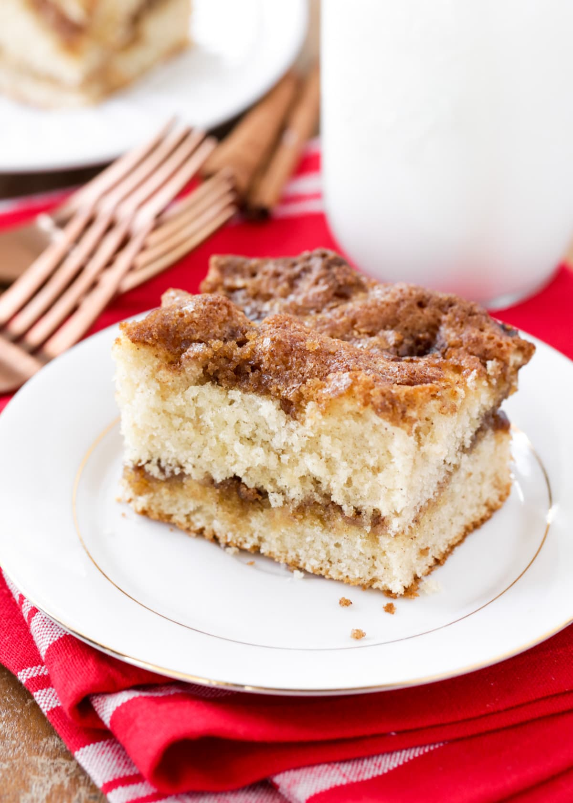

Coffee Cake

Description
This coffee cake is perfect for Sunday mornings while reading the paper. Be prepared; it won't last long. Just like potato chips, you can't eat just one.
Ingredients
Streusel Topping:
- ⅔ cup white sugar
- ¼ cup all-purpose flour
- 1 teaspoon ground cinnamon
- ¼ cup cold butter
Cake:
- 2 cups all-purpose flour
- ¾ cup white sugar
- 2 teaspoons baking powder
- ½ teaspoon salt
- ½ cup cold butter
- 1 egg
- ¾ cup milk, or as needed
- 1 ½ teaspoons vanilla extract
Steps
- Preheat the oven to 350 degrees F (175 degrees C). Grease and flour a 9x13-inch pan.
- Make streusel topping: Combine sugar, flour, and cinnamon in a medium bowl. Cut in butter until mixture resembles coarse crumbs. Set aside.
- Make cake: Combine flour, sugar, baking powder, and salt in a large bowl. Cut in butter until mixture resembles coarse crumbs. Whisk together egg and milk in a separate bowl; stir in vanilla.
- Pour egg mixture into crumb mixture; mix until just moistened.
- Spread into the prepared pan and sprinkle with streusel topping.
- Bake in the preheated oven until a toothpick inserted into the center of the cake comes out clean, 25 to 30 minutes. Allow to cool before slicing.